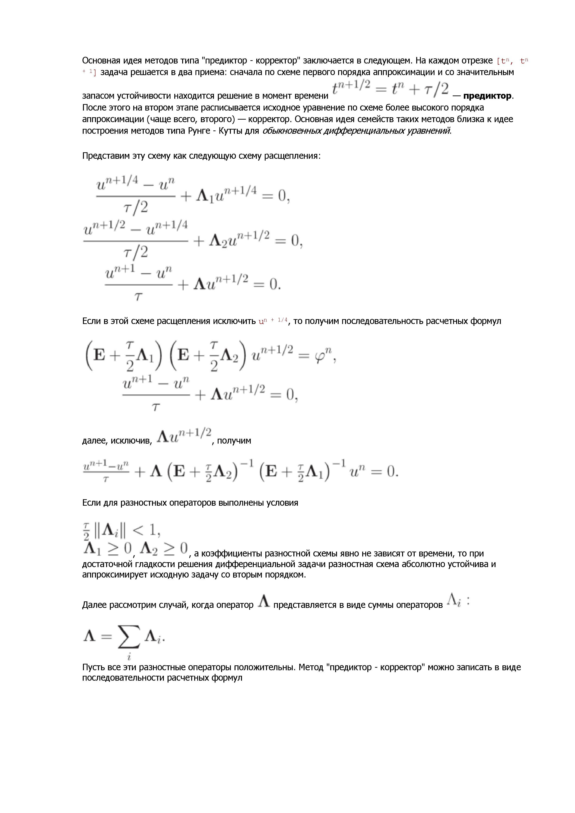
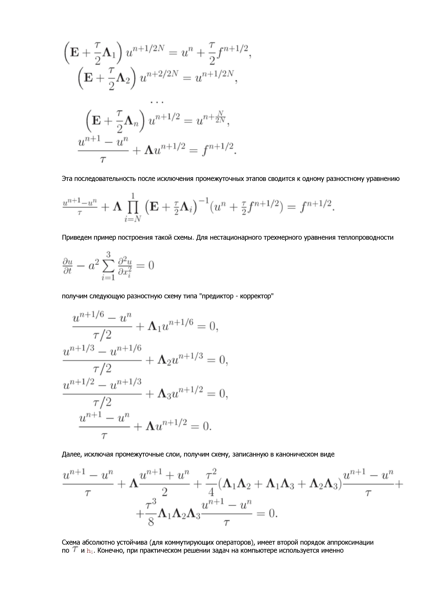
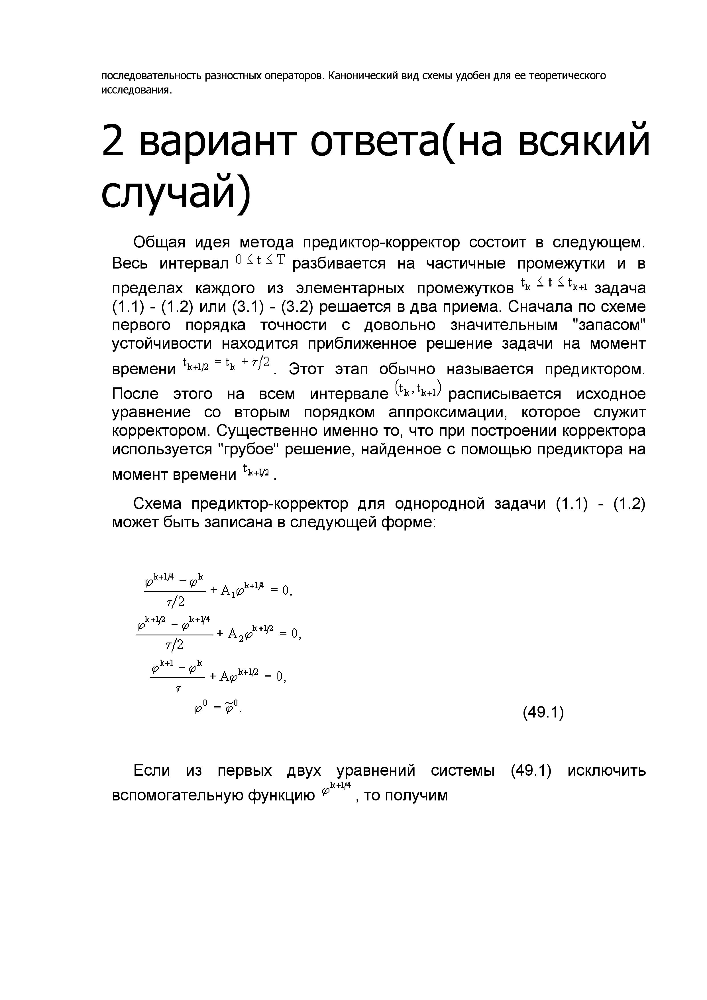
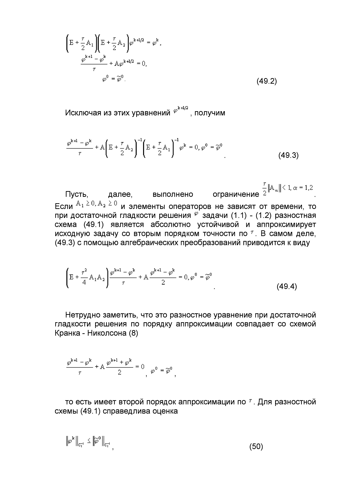
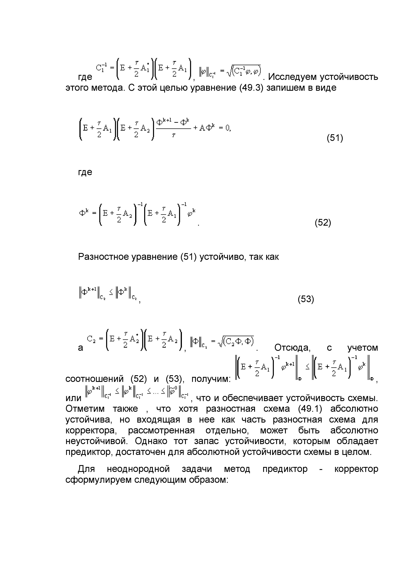
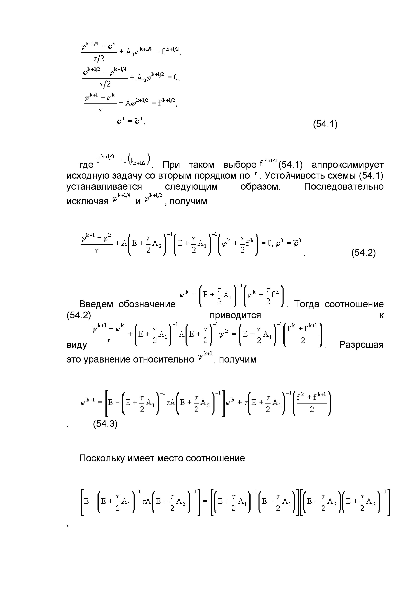
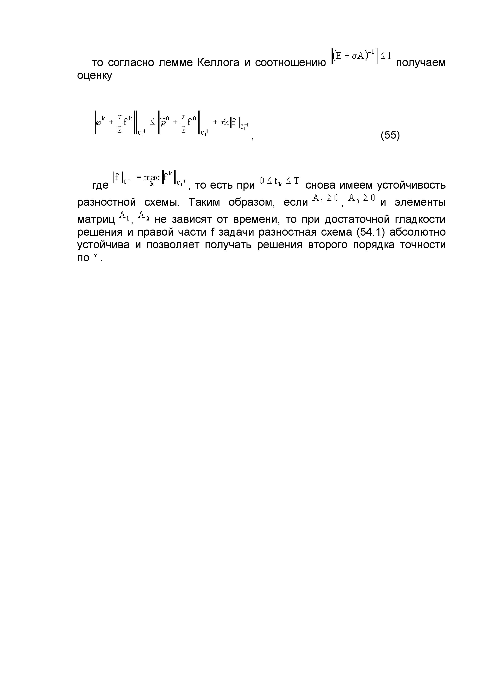
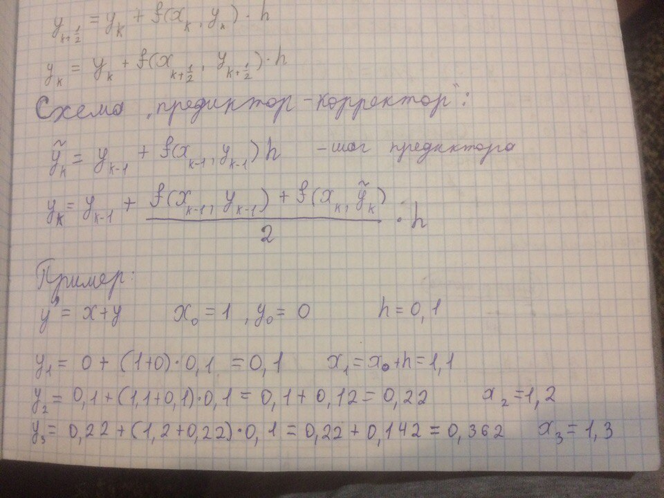
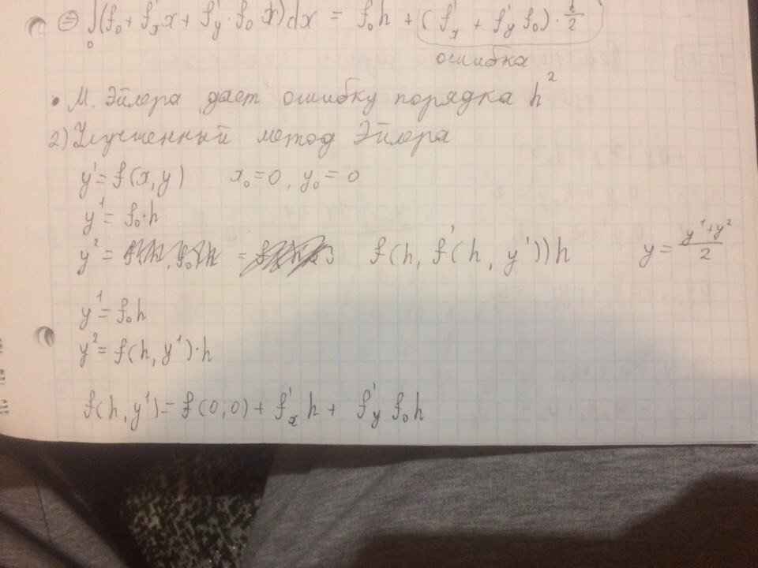
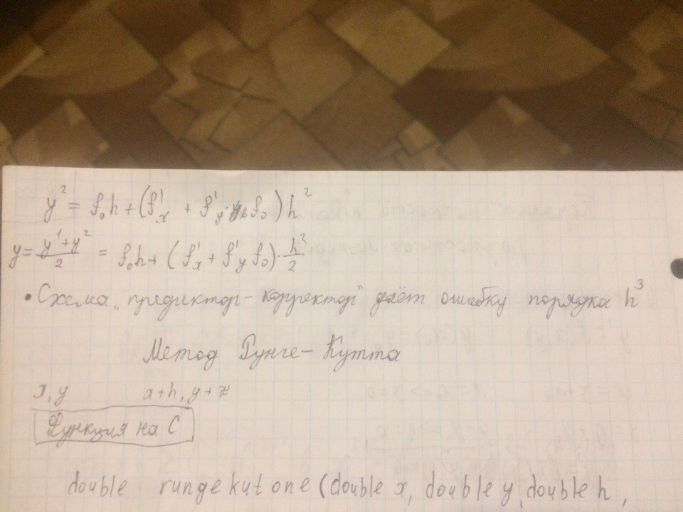

  <DOCTIPE html>
  <head>
  <meta charset=utf-8>
  <meta name=viewport content=width=device-width, initial-scale=1, shrink-to-fit=no>
  <link rel=stylesheet href=https://maxcdn.bootstrapcdn.com/bootstrap/4.0.0-beta.2/css/bootstrap.min.css integrity=sha384-PsH8R72JQ3SOdhVi3uxftmaW6Vc51MKb0q5P2rRUpPvrszuE4W1povHYgTpBfshb crossorigin=anonymous>
  </head>
  <body>
  
<h1 id="вопрос-19">Вопрос #19</h1>
<h2 id="схема-предикторкорректор-для-одного-уравнения-1-го-порядка"><a href="http://detc.ls.urfu.ru/assets/amath0031/lectures/predictor_ru.html">Схема предиктор–корректор для одного уравнения 1-го порядка</a></h2>
<p><br> <br> <br> <br> <br> <br> <br></p>
<h2 id="схема-предикторкорректор-для-одного-уравнения-1-го-порядка-вариант-2">Схема предиктор–корректор для одного уравнения 1-го порядка (вариант #2)</h2>
<p><br></p>
<h3 id="оценка-точности">Оценка точности</h3>
<p><br> <br></p>

  <script src='https://code.jquery.com/jquery-3.2.1.slim.min.js' integrity='sha384-KJ3o2DKtIkvYIK3UENzmM7KCkRr/rE9/Qpg6aAZGJwFDMVNA/GpGFF93hXpG5KkN' crossorigin='anonymous'></script>
  <script src='https://cdnjs.cloudflare.com/ajax/libs/popper.js/1.12.3/umd/popper.min.js' integrity='sha384-vFJXuSJphROIrBnz7yo7oB41mKfc8JzQZiCq4NCceLEaO4IHwicKwpJf9c9IpFgh' crossorigin='anonymous'></script>
  <script src='https://maxcdn.bootstrapcdn.com/bootstrap/4.0.0-beta.2/js/bootstrap.min.js' integrity='sha384-alpBpkh1PFOepccYVYDB4do5UnbKysX5WZXm3XxPqe5iKTfUKjNkCk9SaVuEZflJ' crossorigin='anonymous'></script>
  </body>
  </html>
